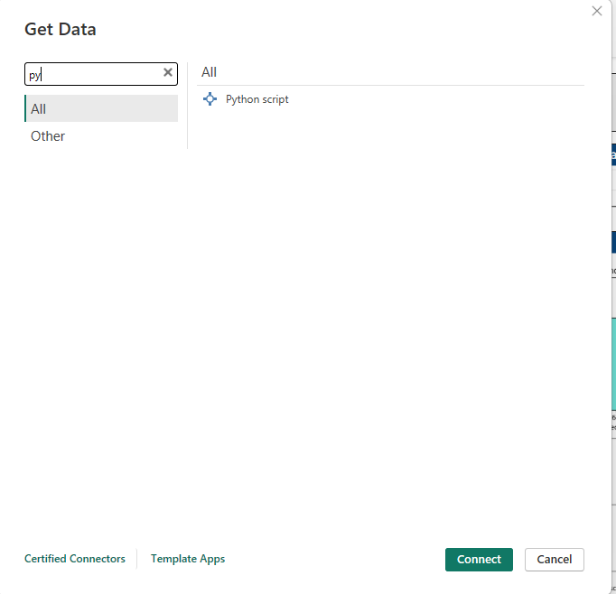
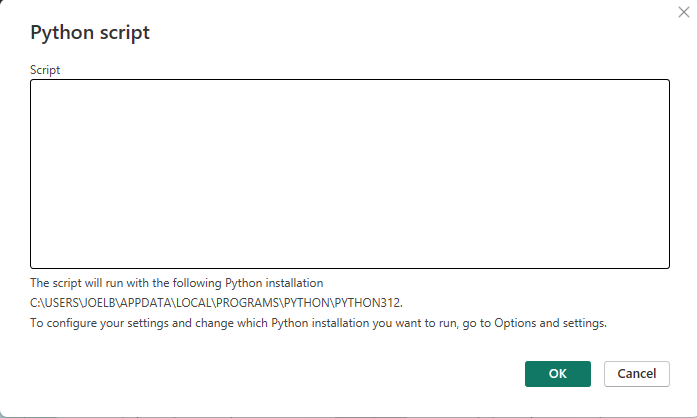
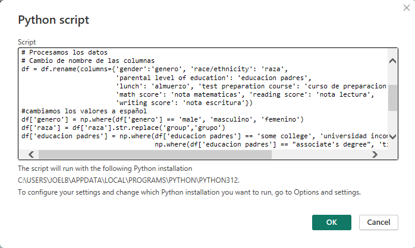
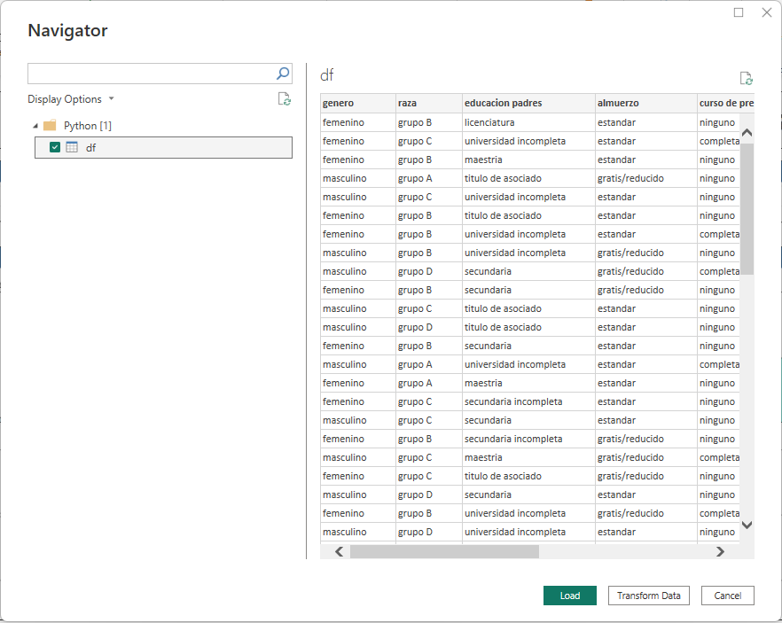
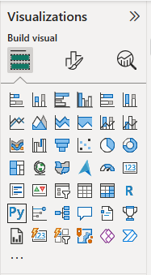
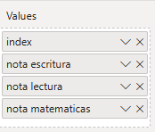
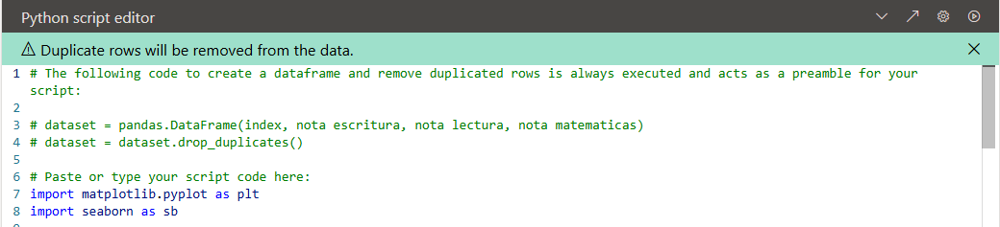
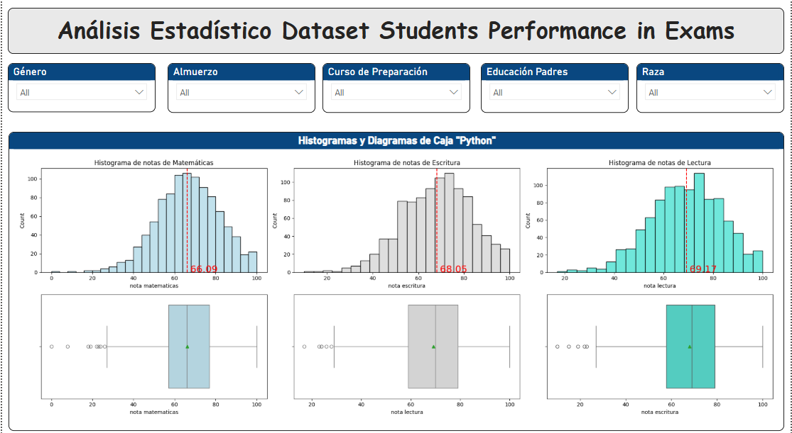
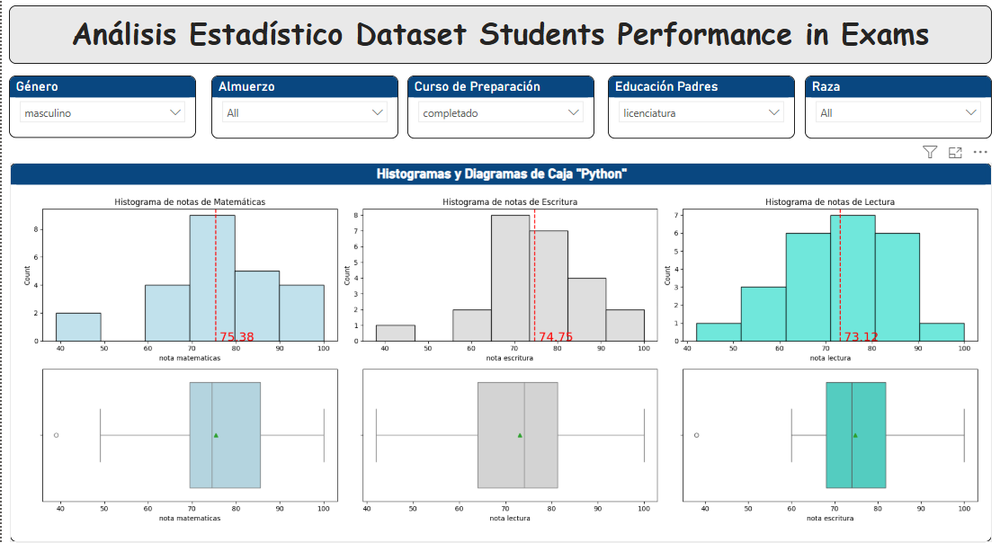
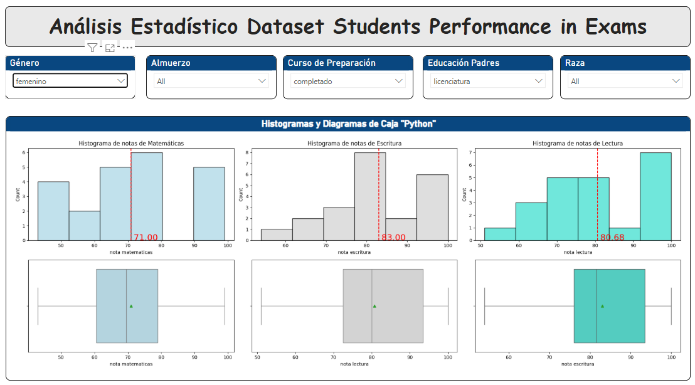

¿Sé puede procesar datos con un script de python en power BI?
La respuesta es sí, veamoslo con el siguiente ejemplo sencillo
Importamos datos desde un script en python
En obtener datos buscamos script de python.

Escribimos el código necesario para importar los datos

En esta ocasión el código que usaremos será el siguiente.
Código
# Librerias a utilizarimport pandas as pdimport numpy as np# Cargamos los datos desde el archivo csvdf = pd.read_csv("StudentsPerformance.csv")# Procesamos los datos # Cambio de nombre de las columnas df = df.rename(columns={'gender':'genero', 'race/ethnicity': 'raza','parental level of education': 'educacion padres','lunch': 'almuerzo', 'test preparation course': 'curso de preparacion','math score': 'nota matematicas', 'reading score': 'nota lectura','writing score': 'nota escritura'})#cambiamos los valores a españoldf['genero'] = np.where(df['genero'] =='male', 'masculino', 'femenino')df['raza'] = df['raza'].str.replace('group','grupo')df['educacion padres'] = np.where(df['educacion padres'] =='some college', 'universidad incompleta', np.where(df['educacion padres'] =="associate's degree", 'titulo de asociado', np.where(df['educacion padres']=='high school', 'secundaria', np.where(df['educacion padres']=='some high school', 'secundaria incompleta', np.where(df['educacion padres']=="bachelor's degree", "licenciatura","maestria")))))df['almuerzo'] = np.where(df['almuerzo'] =='standard', 'estandar', 'gratis/reducido')df['curso de preparacion'] = np.where(df['curso de preparacion'] =='none', 'ninguno', 'completado')
escribimos el código y damos clic en OK
 ### Seleccionamos el df y damos clic en cargar y tenemos nuestros datos listo para usarlos o si deseamos podemos realizar otras transformaciones a los datos.

¿Sé puede insertar elementos visuales de python en Power BI?
Sí, veamos un ejemplo:
En el panel de visualizaciones seleccionamos Py

Pasamos como valores las variables que vamos a graficar Alerta: como Power BI elimina duplicados automáticamente necesitamos pasar una variable index

En el editor de script de python escribimos el código para generar la gráfica

El código que vamos a colocar en este script en este caso es el siguiente:
Código
import matplotlib.pyplot as pltimport seaborn as sbfig, ax = plt.subplots(nrows =2, ncols =3, figsize=(20,7))sb.histplot(data=dataset, x='nota matematicas', ax= ax[0,0],color='lightblue')sb.histplot(data=dataset, x='nota escritura', ax = ax[0,1], color='lightgray')sb.histplot(data=dataset, x ='nota lectura', ax =ax[0,2], color ='turquoise')# Añadimos la media a cada gráficop_mate =dataset['nota matematicas'].mean()p_escr = dataset['nota escritura'].mean()p_lect = dataset['nota lectura'].mean()ax[0,0].axvline(p_mate, color='red', linestyle='--')ax[0,1].axvline(p_escr, color='red', linestyle='--')ax[0,2].axvline(p_lect, color='red', linestyle='--')#añadimos una etiqueta a la mediaax[0,0].annotate(f'{p_mate: .2f}', (p_mate,0), color='red',size=18)ax[0,1].annotate(f'{p_escr: .2f}', (p_escr,0), color='red',size=18)ax[0,2].annotate(f'{p_lect: .2f}', (p_lect,0), color='red',size=18)# Añadimos los titulosax[0,0].set_title('Histograma de notas de Matemáticas')ax[0,1].set_title('Histograma de notas de Escritura')ax[0,2].set_title('Histograma de notas de Lectura')#Boxplotssb.boxplot(data=dataset, x='nota matematicas', ax=ax[1,0], showmeans=True, color ='lightblue')sb.boxplot(data=dataset, x='nota lectura', ax=ax[1,1], showmeans=True, color ='lightgray')sb.boxplot(data=dataset, x='nota escritura', ax=ax[1,2], showmeans=True, color='turquoise')plt.tight_layout()plt.show()
Finalmente creamos el dashboard de control añadiendo algunos segmentadores o lo que necesitemos

De esta manera podemos combinar python y Power BI para tener un tablero interactivo


Ejecutar el código
---title: Integración de Python en Power BIfreeze: trueauthor: Joel Burbanodate: 2025-02-10categories: [Python, Power BI]---# ¿Sé puede procesar datos con un script de python en power BI?La respuesta es sí, veamoslo con el siguiente ejemplo sencillo## Importamos datos desde un script en python ### En obtener datos buscamos script de python.{}### Escribimos el código necesario para importar los datosEn esta ocasión el código que usaremos será el siguiente.```{python}#| eval: false# Librerias a utilizarimport pandas as pdimport numpy as np# Cargamos los datos desde el archivo csvdf = pd.read_csv("StudentsPerformance.csv")# Procesamos los datos # Cambio de nombre de las columnas df = df.rename(columns={'gender':'genero', 'race/ethnicity': 'raza','parental level of education': 'educacion padres','lunch': 'almuerzo', 'test preparation course': 'curso de preparacion','math score': 'nota matematicas', 'reading score': 'nota lectura','writing score': 'nota escritura'})#cambiamos los valores a españoldf['genero'] = np.where(df['genero'] =='male', 'masculino', 'femenino')df['raza'] = df['raza'].str.replace('group','grupo')df['educacion padres'] = np.where(df['educacion padres'] =='some college', 'universidad incompleta', np.where(df['educacion padres'] =="associate's degree", 'titulo de asociado', np.where(df['educacion padres']=='high school', 'secundaria', np.where(df['educacion padres']=='some high school', 'secundaria incompleta', np.where(df['educacion padres']=="bachelor's degree", "licenciatura","maestria")))))df['almuerzo'] = np.where(df['almuerzo'] =='standard', 'estandar', 'gratis/reducido')df['curso de preparacion'] = np.where(df['curso de preparacion'] =='none', 'ninguno', 'completado')```escribimos el código y damos clic en OK### Seleccionamos el df y damos clic en cargar y tenemos nuestros datos listo para usarlos o si deseamos podemos realizar otras transformaciones a los datos.## ¿Sé puede insertar elementos visuales de python en Power BI?Sí, veamos un ejemplo:En el panel de visualizaciones seleccionamos PyPasamos como valores las variables que vamos a graficar [Alerta:]{style="color:red"} como Power BI elimina duplicados automáticamente necesitamos pasar una variable indexEn el editor de script de python escribimos el código para generar la gráficaEl código que vamos a colocar en este script en este caso es el siguiente:```{python}#| eval: falseimport matplotlib.pyplot as pltimport seaborn as sbfig, ax = plt.subplots(nrows =2, ncols =3, figsize=(20,7))sb.histplot(data=dataset, x='nota matematicas', ax= ax[0,0],color='lightblue')sb.histplot(data=dataset, x='nota escritura', ax = ax[0,1], color='lightgray')sb.histplot(data=dataset, x ='nota lectura', ax =ax[0,2], color ='turquoise')# Añadimos la media a cada gráficop_mate =dataset['nota matematicas'].mean()p_escr = dataset['nota escritura'].mean()p_lect = dataset['nota lectura'].mean()ax[0,0].axvline(p_mate, color='red', linestyle='--')ax[0,1].axvline(p_escr, color='red', linestyle='--')ax[0,2].axvline(p_lect, color='red', linestyle='--')#añadimos una etiqueta a la mediaax[0,0].annotate(f'{p_mate: .2f}', (p_mate,0), color='red',size=18)ax[0,1].annotate(f'{p_escr: .2f}', (p_escr,0), color='red',size=18)ax[0,2].annotate(f'{p_lect: .2f}', (p_lect,0), color='red',size=18)# Añadimos los titulosax[0,0].set_title('Histograma de notas de Matemáticas')ax[0,1].set_title('Histograma de notas de Escritura')ax[0,2].set_title('Histograma de notas de Lectura')#Boxplotssb.boxplot(data=dataset, x='nota matematicas', ax=ax[1,0], showmeans=True, color ='lightblue')sb.boxplot(data=dataset, x='nota lectura', ax=ax[1,1], showmeans=True, color ='lightgray')sb.boxplot(data=dataset, x='nota escritura', ax=ax[1,2], showmeans=True, color='turquoise')plt.tight_layout()plt.show()```Finalmente creamos el dashboard de control añadiendo algunos segmentadores o lo que necesitemosDe esta manera podemos combinar python y Power BI para tener un tablero interactivo